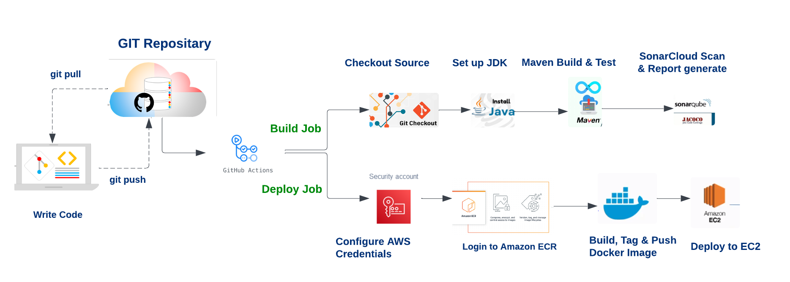

Continuous Integration and Continuous Deployment (CI/CD) is a modern software development practice that automates the building, testing, and deployment of applications. This pipeline ensures that code changes are validated and delivered to production efficiently, reliably, and with minimal manual intervention.

mvn clean verify to build the project and execute tests. It also runs sonar:sonar to perform static code analysis using SonarCloud.
latest, and pushes it to ECR for deployment.
Need to create this file under .github/workflows/deploy.yml
name: Deploy Portfolio Service to AWS
on:
push:
branches:
- main
env:
AWS_REGION: ap-southeast-2 # set this to your preferred AWS region, e.g. us-west-1
ECR_REPOSITORY: repoName # set this to your Amazon ECR repository name
CONTAINER_NAME: containerName
jobs:
build-test-sonar:
runs-on: ubuntu-latest
steps:
- name: Checkout Source
uses: actions/checkout@v4
- name: Set up JDK 17
uses: actions/setup-java@v4
with:
java-version: '17'
distribution: 'temurin'
- name: Build & Test
run: mvn clean verify sonar:sonar -Dsonar.token=${{ secrets.SONAR_TOKEN }}
- name: Configure AWS credentials
uses: aws-actions/configure-aws-credentials@v1
with:
aws-access-key-id: ${{ secrets.AWS_ACCESS_KEY_ID }}
aws-secret-access-key: ${{ secrets.AWS_SECRET_ACCESS_KEY }}
aws-region: ${{ env.AWS_REGION }}
- name: Login to Amazon ECR
id: login-ecr
uses: aws-actions/amazon-ecr-login@v1
- name: Build, tag, and push image to Amazon ECR
id: build-image
env:
ECR_REGISTRY: ${{ steps.login-ecr.outputs.registry }}
IMAGE_TAG: latest
run: |
# Build a docker container and
# push it to ECR
docker build -t $ECR_REGISTRY/$ECR_REPOSITORY:$IMAGE_TAG .
docker push $ECR_REGISTRY/$ECR_REPOSITORY:$IMAGE_TAG
echo "image=$ECR_REGISTRY/$ECR_REPOSITORY:$IMAGE_TAG" >> $GITHUB_OUTPUT
- name: Deploy to EC2
uses: appleboy/ssh-action@v0.1.10
with:
host: ${{ secrets.EC2_HOST }} # public IP/DNS of EC2
username: ec2-user # or ubuntu, depending on AMI
key: ${{ secrets.EC2_SSH_KEY }} # your private key (.pem content)
script: |
aws ecr get-login-password --region ${{ env.AWS_REGION }} \
| docker login --username AWS --password-stdin ${{ steps.login-ecr.outputs.registry }}
# Pull latest image
docker pull ${{ steps.login-ecr.outputs.registry }}/${{ env.ECR_REPOSITORY }}:latest
# Stop old container (if running)
docker stop ${{ env.CONTAINER_NAME }} || true
docker rm ${{ env.CONTAINER_NAME }} || true
# Run new container
docker run -d \
-p 80:8080 \
--name ${{ env.CONTAINER_NAME }} \
${{ steps.login-ecr.outputs.registry }}/${{ env.ECR_REPOSITORY }}:latest
pom.xml<properties>
<properties>
<java.version>17</java.version>
<jacoco.version>0.8.11</jacoco.version>
<sonar.projectKey>sonunigambar_portfolio-service</sonar.projectKey>
<sonar.organization>portfolio-service</sonar.organization>
<sonar.host.url>https://sonarcloud.io</sonar.host.url>
<sonar.java.binaries>target/classes</sonar.java.binaries>
</properties>
<dependency>
<dependency>
<groupId>org.jacoco</groupId>
<artifactId>jacoco-maven-plugin</artifactId>
<version>0.8.11</version>
</dependency>
<plugins> inside <build>
<plugin>
<groupId>org.jacoco</groupId>
<artifactId>jacoco-maven-plugin</artifactId>
<version>0.8.11</version>
<executions>
<execution>
<goals>
<goal>prepare-agent</goal>
</goals>
</execution>
<execution>
<id>report</id>
<phase>test</phase>
<goals>
<goal>report</goal>
</goals>
</execution>
</executions>
</plugin>
<plugin>
<groupId>org.sonarsource.scanner.maven</groupId>
<artifactId>sonar-maven-plugin</artifactId>
<version>3.10.0.2594</version>
</plugin>
GroupId: org.springframework.boot
ArtifactId: spring-boot-maven-plugin
This plugin is used to package and run Spring Boot applications. It provides goals like:
spring-boot:run → Run the app directly from source.spring-boot:repackage → Create an executable JAR or WAR with embedded server (Tomcat, Jetty, Undertow).
GroupId: org.jacoco
ArtifactId: jacoco-maven-plugin
Version: 0.8.11
JaCoCo is a code coverage library for Java. This plugin integrates JaCoCo with Maven builds:
prepare-agent → Instruments the code before tests run.report → Generates coverage reports in HTML, XML, CSV.
GroupId: org.sonarsource.scanner.maven
ArtifactId: sonar-maven-plugin
Version: 3.10.0.2594
The SonarQube Maven plugin is used to run static code analysis and send results to a SonarQube server. It checks: